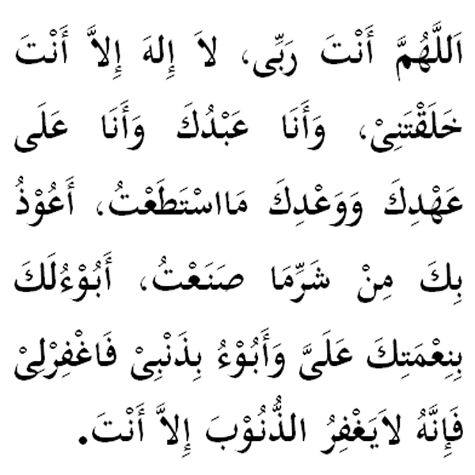

|
Terjemahan "Ya Allah, Engkaulah Tuhanku, tiada tuhan kecuali Engkau. Engkaulah yang menciptakan diriku. Aku (hanyalah) hambaMu. Aku berusaha sedaya upaya untuk setia memegang janjiMu. Aku berlindung kepadaMu ya Allah akibat dari kejahatan yang terlanjur telah aku lakukan. Ya Allah, aku mengaku sekian banyak nikmatMu kepada aku dan aku mengakui juga akan sekian banyak dosaku, maka ampunkanlah dosaku. Tiada yang dapat mengampunkan dosa kecuali Engkau." Fadhilat Wirid Daripada Syaddad bun 'Aus (RA) daripada Nabi (SAW) bersabda: " Penghulu istighfar ialah (bacaan di atas), sesiapa yang membaca penuh dengan keyakinan setiap pagi dan petang maka sekiranya ia mati di waktu itu insyaAllah akan dimasukkan ke dalam syurga." (Riwayat Al - Bukhari) |

|